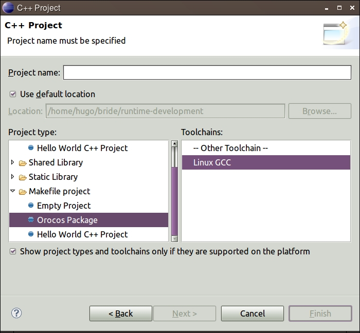

Creating a new Orocos Project
An Ococos Project is created using the new C++ Project Wizard.
Note: Make sure to be in the C/C++ perspective.
To create a a project:
- Click File > New > C++ Project

- In the Project Name box, type a name. Best practice:
This name should be the same as the Orocos package name.
- To specify a different directory in which to save your project, clear the
Use Default Location check box, and enter the path in the
Location box.
- In the Project type pane: Open the Makefile
Project folder and select Orocos Package.
- Select the Linux GCC from the list in the
Toolchains pane.
- You can change build configurations list for the project. To do it, press
Next. But usually you need not to do it.
- To create your project, click Finish.
Dirctory Structure of the Created Orocos Project
The newly created empty project will contain three folders:
- model
- This folder is the most important at the start of the project. Here you
will create your models.
- src
- All the generated source code from the model is contained in this
folder.
- deployment
- Deployment iinformation and or models will be generated into this
folder.
Related Reference:
Orocos Package